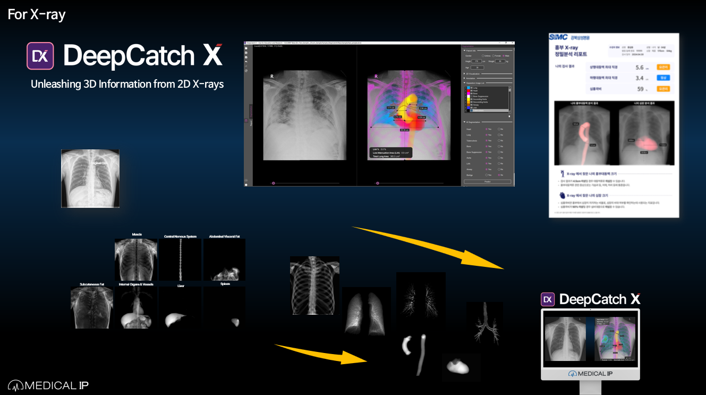
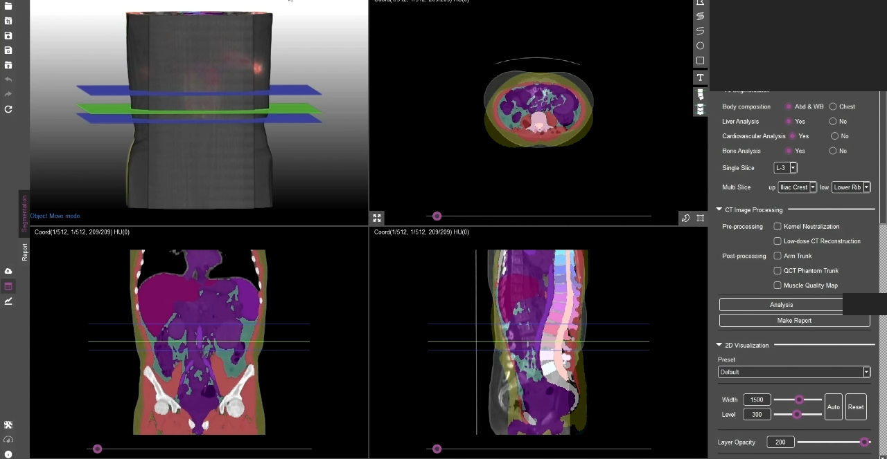
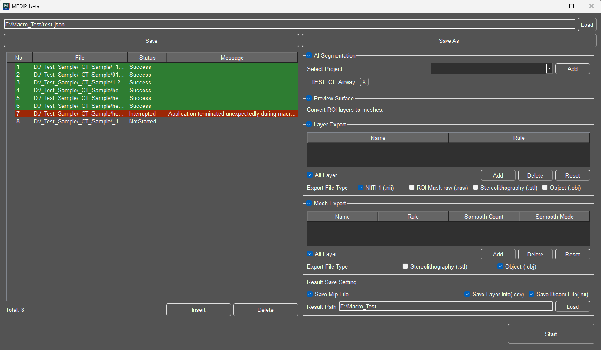
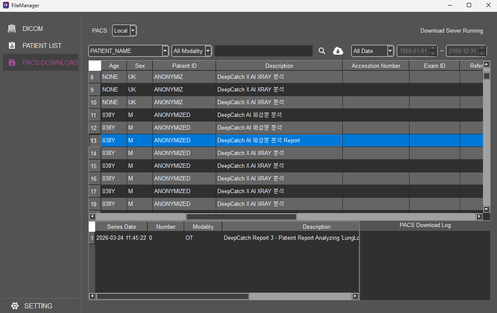
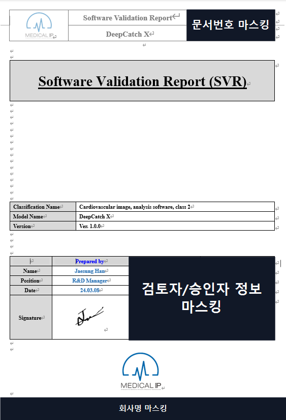
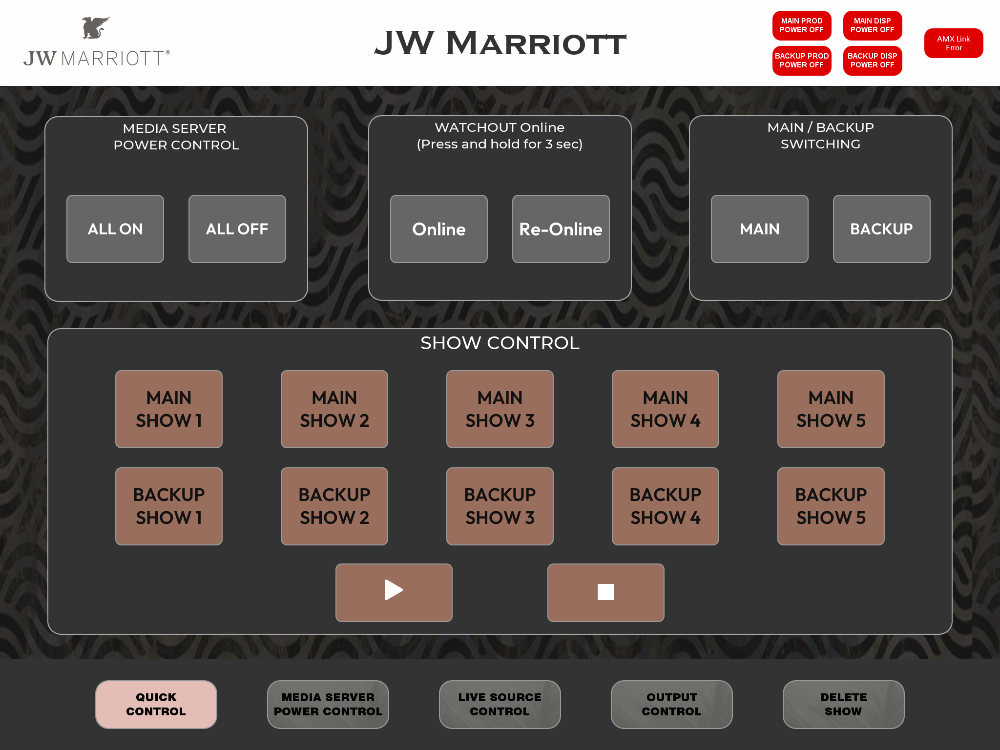

Profile
- 이름
- 한재성
- 포지션
- C++/Qt Application Engineer
- 강점
- 의료영상 클라이언트 · 테스트/배치 자동화 · 장비 연동
- 연락처
- 필요 시 별도 전달
APPLICATION ENGINEER / PORTFOLIO 2026
총경력 6년 9개월 · 2026.10 기준
작업 사례 보기사용한 도구와 직접 구현한 기능을 함께 소개합니다.
기존 MVVM 기반 영상·분석 결과 표시와 리포트·분석 자동화 구현.
DICOM/PACS 오류 보완, 비동기 C-ECHO와 장비 통신 예외 처리.
QWebEngine 기반 리포트와 기관별 출력 조건 반영.
Qt 입력 기록·재생 기반 반복 테스트와 오류 재현.
일부 화면·문서는 비식별화했으며, 기능 요약 자료를 함께 포함했습니다.

DeepCatch X는 흉부 X-ray를 AI로 분석하는 메디컬아이피의 의료영상 소프트웨어입니다. 분석 항목에 따라 심장·대동맥·폐 등의 정량 정보와 시각화 결과를 제공합니다.
공식 제품 소개 ↗기존 MVVM 기본 구조를 바탕으로 DeepCatch X 클라이언트의 주요 기능 개발
최초 배포 담당 · 기관별 출력 조건 반영
DeepCatch X 제품 소개 · 분석 화면 및 리포트

Qt Widgets 입력 이벤트 자동화 구조 설계·개발
수십 건의 크래시·기능 오류 발견 · 일일 결과 공유
Qt 입력 기록·재생 자동 테스트 실행 예시

다중 파일 분석·Export와 파일별 실패 처리 구현
실패 후 다음 파일 계속 처리 · JSONL 상태 추적
파일별 실행 상태와 중단 메시지

기존 연동 오류 수정·비동기 C-ECHO 추가
UI에서 서버 연결 상태 확인 · 기관별 통신 오류 개선
기존 PACS 리포트 목록 화면

인허가용 소프트웨어 Validation 문서 작성
시험 항목·결과·검증 기록을 SVR로 정리
DeepCatch X · Software Validation Report 표지

AMX 통합 제어·WATCHOUT 연동 개발
TCP/IP·Serial 연동, 통신 예외 처리와 현장 검증
JW Marriott · AMX 통합 제어 화면
의료영상 클라이언트·자동화 개발, PACS 보완·Validation 문서 작성.
작업 사례AMX 통합 제어·Python/Qt 테스트 앱, 장비 연동·현장 검증.
현장 요청 · 로그 · 환경
입출력 흐름 · 실패 지점
C++/Qt · MVVM · 연동
자동/수동 테스트 · 검증 문서
추가 요청 · 예외 반영
Git/GitLab·SVN 변경 관리, Redmine 이슈·재현 조건 공유.
설치 파일·제품 설정 점검, 현장 설치·동작 확인.
분석·구현·문서 검토 보조. 코드·로그·실행 결과로 확인.